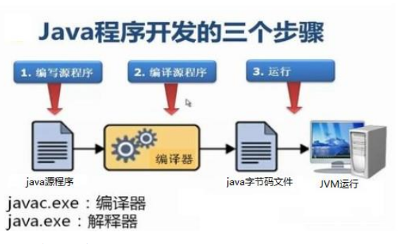
编译: 是指将我们编写的Java源文件翻译成JVM认识的class文件，javac编译器会检查我们所写的程序是否有错误，有错误就会提示出来,如果没有错误就会编译成功。
运行：是指将编译好的class文件交给JVM去运行。
public class HelloWorld {
public static void main(String[] args){
System.out.println("hello world");
}
}main方法：是程序的主方法，写法是固定格式不可以更改，main方法是程序的入口，JVM在运行程序的时候，都会从main方法这里开始执行。
注释的作用是对代码解释说明。
//我是一个单行注释 /* 我是一个多行注释 我是一个多行注释 */
在程序中，有很多java语言已经定义好的单词，具有特殊含义，如public，class，static，void等。
标识符：在程序中我们自己定义的内容，如类的名字，方法的名字，变量的名字等。
命名规则（牢记）：
命名规范：
6.1 常量
在Java程序中固定不变。
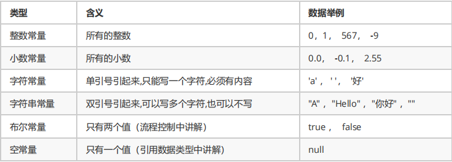
6.2 变量
在Java程序中可以变化。
int num1 = 0
//定义变量的格式(三要素)
数据类型 变量名 = 数据值;
Java中要求一个变量每次只能保存一个数据，而且必须声明数据类型，如int（整型）。
基本数据类型：
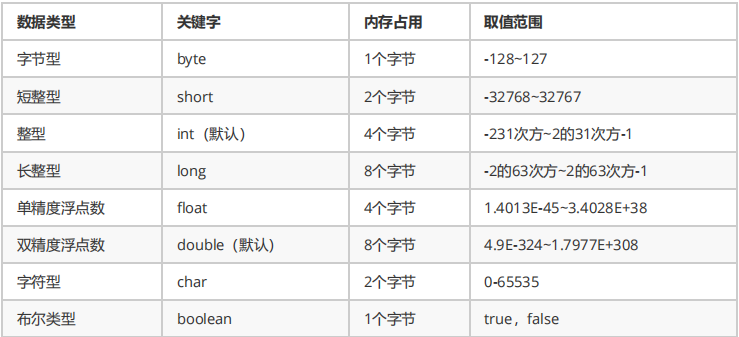
引用数据类型（引用的是内存地址，不是实际的值）：
类，数组，接口。
变量使用要求：
6.3 变量和常量的运算
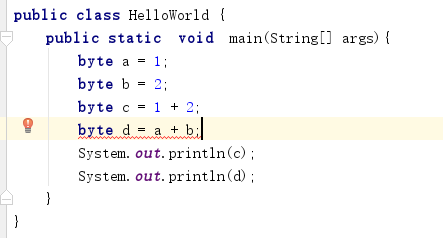
变量d赋值报错的原因是因为，a和b都为变量，编译器不确定是否超过byte的取值范围。
变量c没报错，常量1和2都是固定数值，计算结果也是固定的，没有超过byte的取值范围。
7.1 自动转换
自动转换：在进行运算操作时将取值范围小的类型自动转换为取值范围大的类型。
转换规则：
public static void main(String[] args){
int a = 1;
float b = 1;
//运行结果为2.0
System.out.println(a + b);
}
7.2 强制转换
强制类型转换：主动将取值范围大的类型自动转换为取值范围小的类型。
转换格式：
public static void main(String[] args){
int a = 1;
byte b = (byte)a;
System.out.println(b);
}
强烈注意：
8.1 算数运算符
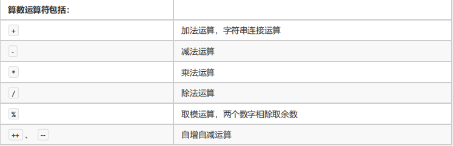
+符号在遇到字符串时表示连接，拼接的含义。
8.2 赋值运算
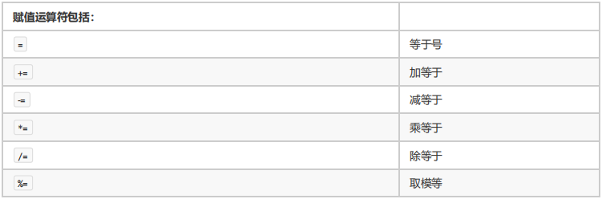
注意：s+=1和s=s+1的区别（s为short类型）
s = s + 1 实际上执行了两次运算，一计算s+1的结果（结果为int），二将s+1的计算结果赋值给s（s为short类型，将int类型结果赋值给s会发生错误）。
s += 1 只运算一次，并带有强制转换的特点，也就是说s += 1就是 s = （short）（s+1）。
8.3比较运算符
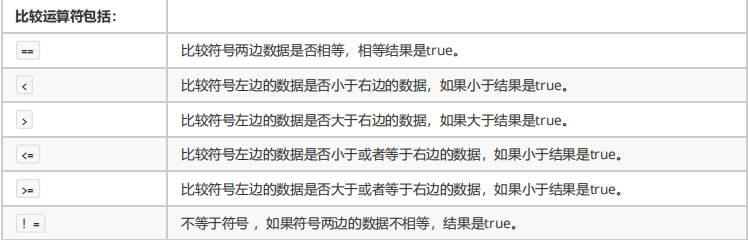
8.4 逻辑运算符
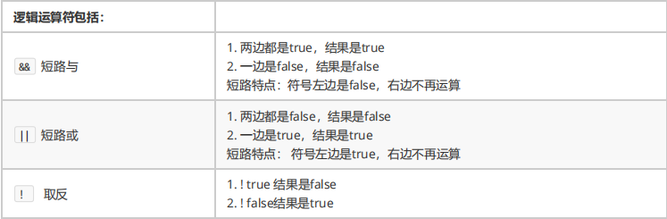
逻辑运算的结果只有true和false。
8.5 三元运算符
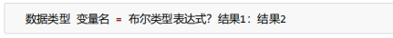
计算方式：
public class HelloWorld {
public static void main(String[] args){
int a = (1==2 ? 100:200);
System.out.println(a);//200
}
}
方法：将一个功能抽取出来，单独定义在一个方法内。
作用：实现代码复用，解决代码冗余。
9.1 方法的定义
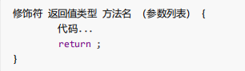
9.2 方法的调用
方法定义完毕后，方法不会自己运行，必须被调用才能执行。
调用方式：
public class HelloWorld {
public static void main(String[] args){
method1();//直接调用
int x = method1();//赋值调用(必须有返回值才能使用)
System.out.println(method1());//输出语句调用
}
public static int method1(){
System.out.println("我是方法1");
return 1;
}
}
9.3 方法重载
含义：在同一个类中，允许存在多个同名方法，只要他们的参数列表（个数不同，类型不同，顺序不同）不同即可。
JVM在调用方法时会根据参数列表找到对应的方法执行。
public class HelloWorld {
public static void main(String[] args){
method1(1,2);
method1("1",2);
}
public static void method1(int a,int b){
System.out.println("我是方法1");
}
public static void method1(String a,int b){
System.out.println("我是方法1的重载");
}
}
概述：控制程序执行顺序。
10.1 判断语句
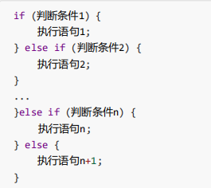
从上到下的顺序执行，只执行一层，没有满足的条件则执行else。
10.2 选择语句
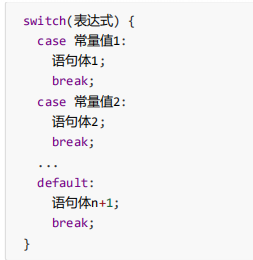
首先计算表达式的值，其次和case依次比较，一旦有对应的值，就会执行相应的语句，执行完毕break（break一定要写，否则程序会继续向下执行，直到选择语句结束）跳出，如果所有都不匹配则执行default。
10.3 循环语句
循环可以嵌套。
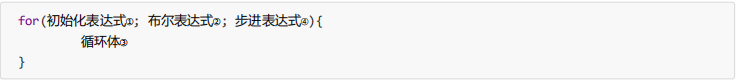
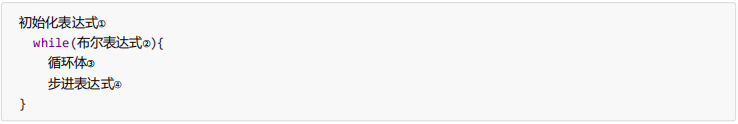
while（true）表示死循环。
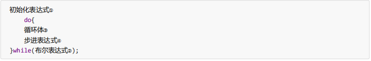
for和while区别：
10.4 跳出语句
概念：数组就是存储数据的容器，数组中的数据类型一致。
11.1 创建数组
int[] arr1 = new int[3];
int[] arr2 = new int[]{1,2,3,4,5};
int[] arr3 = {1,2,3,4,5};
数组实际上是内存中的地址。
JVM的内存划分：
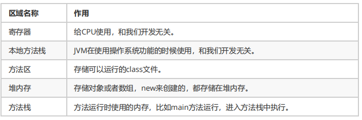
11.2 常用操作
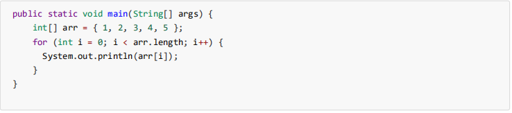
11.3 方法中使用数组